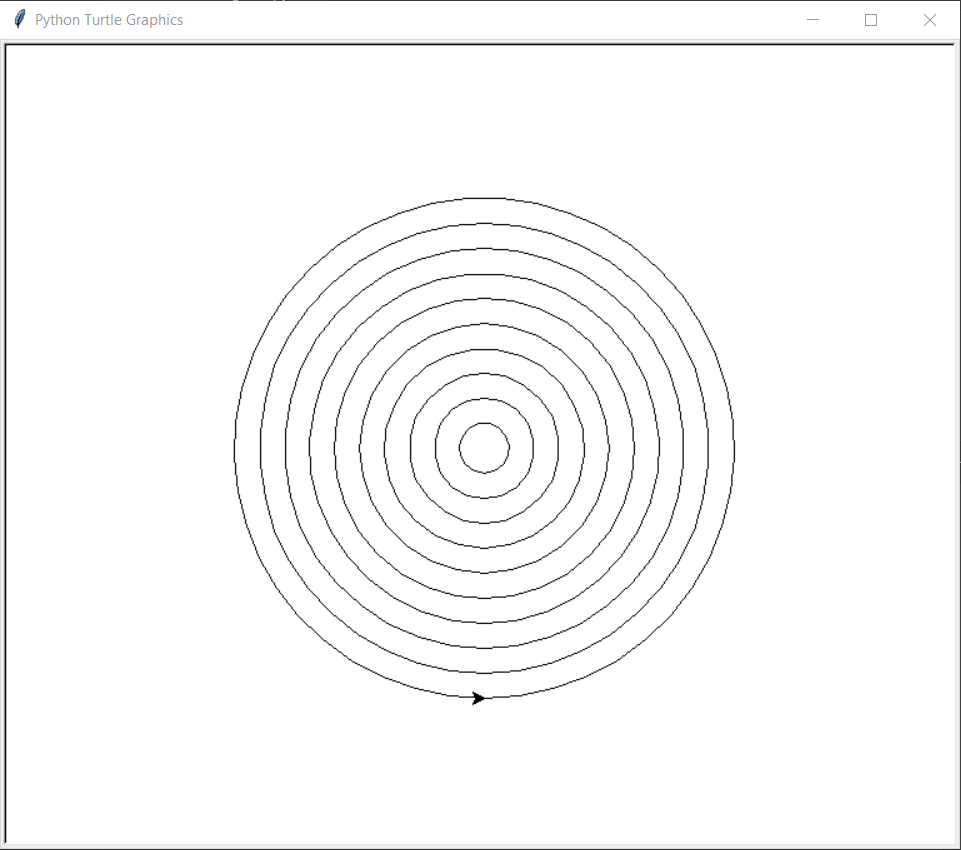
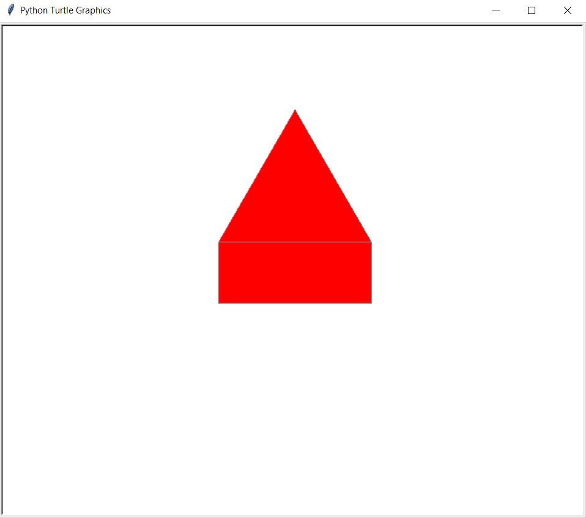
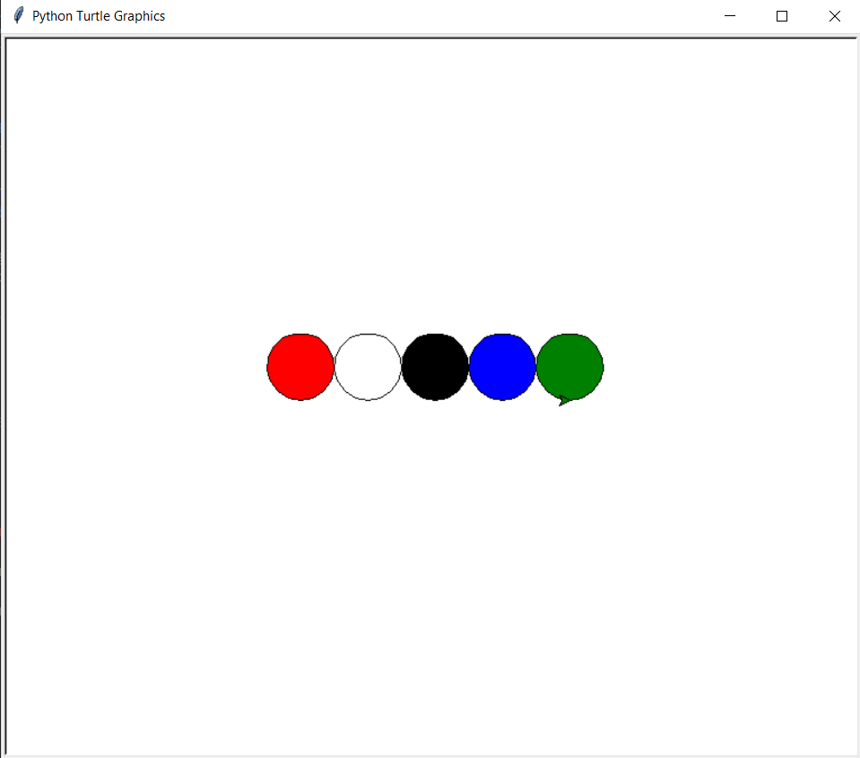
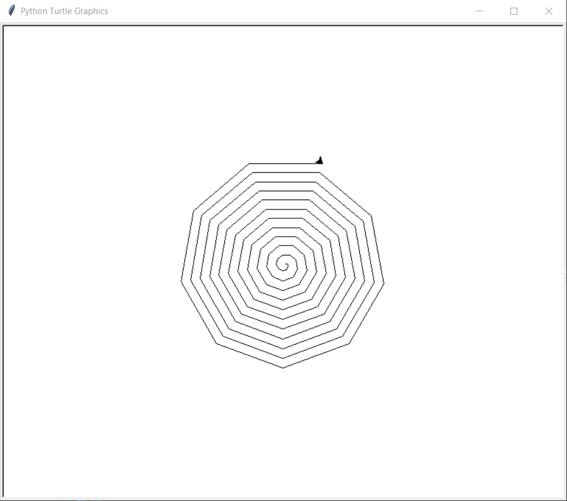
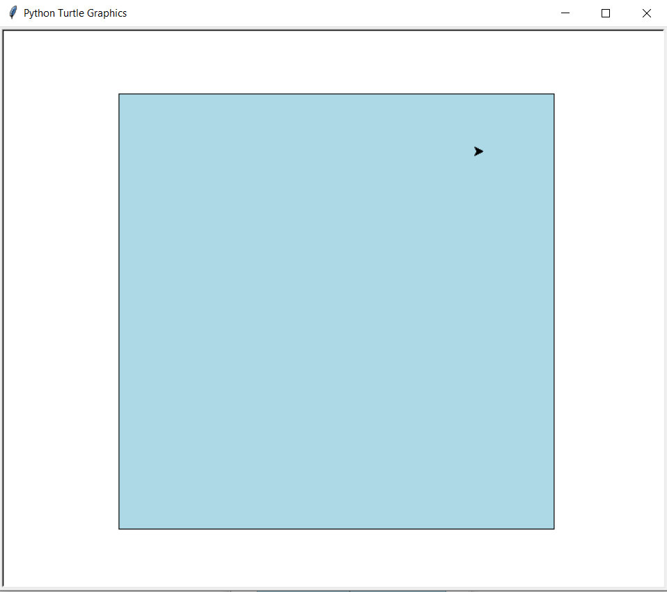

Övningar till kursen#
Under den här fliken samlas samtliga övningar till kursen. Istället för att navigera bland de andra flikarna är samtliga övningar samlade här.
Tabellen nedan visar var övningar till de olika avsnitten finns.
1. Grundläggande programmering#
Övning 1.1#
Skriv ett program som hälsar på användaren. Exempelvis med orden ”Hej på dig!”
Tips
Använd print-satsen.
Övning 1.2#
Skriv ett program som utför additionen 5+7 och skriver ut svaret av additionen.
Tips
Använd additionstecknet och print-satsen.
Övning 1.3#
Skriv ett program som frågar efter din ålder och skriver ut hur gammal du kommer vara om 5 år.
Tips
Använd input-satsen.
Övning 1.4#
Skapa en simpel miniräknare som frågar efter två nummer och sedan skriver ut vad summan, skillnaden, produkten och kvoten är mellan dessa tal.
Tips
Börja med att använda input-satsen, deklarera variabler och tilldela värdena genom att utföra beräkningarna, använd till sist en print-sats.
Övning 1.5#
Skapa ett program som frågar efter en temperatur i enheten i grader Celsius och sedan skriver ut vad den temperaturen korresponderar i grader Fahrenheit. Tips formeln för konverteringen från grader Celsius till grader Fahrenheit är:
\(F= \frac{9}{5} \cdot C + 32 \)
Tips
Börja med att använda input-satsen, deklarera variabeln och tilldela värdet genom att utföra beräkningarna enligt formeln ovan, använd till sist en print-sats.
Övning 1.6#
Skapa ett program där programmet frågar efter en summa pengar, efter en räntesats och ett antal år. Beräkna summan av ränta på ränta på det insatta kapitalet med hjälp av en exponentialfunktion och skriv ut resultatet till användaren.
\(y = C \cdot a^x \)
Tips
Börja med att använda input-satsen, deklarera variablerna och tilldela värdena genom att utföra beräkningarna enligt formeln ovan, använd till sist en print-sats.
2. Satser#
Övning 2.1#
Skapa ett program där en lista med dina fyra favoritfrukter är inkluderade i en lista. Skriv sedan ut den första och den sista frukten i listan.
Tips
Använd [] efter listan för att få åtkomst till olika element inom listan, [-1] indikerar det sista elementet i listan.
Övning 2.2#
Skapa ett program som frågar efter två listor som input och som sen skriver ut båda listorna tillsammans i en lista.
Tips
Använd +-operatorn för att lägga ihop två listor.
Övning 2.3#
Skapa ett program som innehåller 12 siffror. Skriv sedan ut varannat element i listan, var tredje element i listan och var fjärde element i listan.
Tips
Använd skivningsoperatorerna.
Övning 2.4#
Skriv ett program som tar en mening från användaren, exempelvis:
Det här är en mening.
Dela upp meningen i en lista där varje ord är ett element. Skriv sedan ut listan.
Tips
Använd metoden split() för att dela upp en text i ord.
Övning 2.5#
Skapa ett program som innehåller en lista med minst 10 heltal. Låt programmet sortera listan i:
Stigande ordning
Fallande ordning
Skriv ut resultaten.
Tips
Metoden sort(), om du vill ha den i andra ordningen använd sort(reverse=True).
Övning 2.6#
Skapa två listor med heltal, t.ex.:
lista1 = [5, 2, 9]
lista2 = [8, 1, 6]
Skriv ett program som:
Kombinerar de två listorna
Sorterar den kombinerade listan i stigande ordning
Tar bort dubbletter från den sorterade listan
Skriv ut den slutgiltiga listan.
Tips
Använd + för att kombinera listor, och metoden set() för att ta bort dubbletter
Övning 2.7#
Låt användaren skriva in en mening. Skriv ett program som:
Räknar antalet ord i meningen
Hittar det längsta ordet
Hittar det kortaste ordet
Skriv ut resultaten.
Tips
Du kan använda metoder som split() och funktioner som max() och min().
Övning 2.8#
Skapa två listor med heltal.
lista1 = [1, 2, 3, 4, 5]
lista2 = [4, 5, 6, 7, 8]
Skriv ett program som:
Hittar de gemensamma elementen mellan listorna
Räknar antalet gemensamma element
Tips
Använd set() och operatorn & för att hitta gemensamma element.
Övning 2.9#
Skapa en lista med minst 10 element. Skriv ett program som roterar listan ett bestämt antal steg åt höger. Användaren ska kunna ange hur många steg listan ska roteras.
Exempel:
Lista: [1, 2, 3, 4, 5]
Steg: 2
Resultat: [4, 5, 1, 2, 3]
Tips
Använd slicing för att dela upp listan och kombinera delarna igen.
Övning 2.10#
Skapa ett program som frågar användaren efter ett lösenord. Om användaren anger rätt lösenord så skrivs ett meddelande att lösenordet är korrekt, annars skrivs ett meddelande att lösenordet var felaktigt.
Tips
Börja med att deklarera det korrekta lösenordet, använd sen en if- och else-sats.
Övning 2.11#
Skapa ett program där användaren anger hur många poäng hen fick på provet. Listan nedan visar hur många poäng som ger ett särskilt betyg.
Betyg |
Poäng |
|---|---|
A |
100 poäng eller mer. |
C |
50-100 poäng. |
E |
30-50 poäng. |
F |
30 eller mindre |
Låt sedan programmet skriva ut vilket betyg som användaren fick.
Tips
Använd sen en if-, elif- och else-sats.
Övning 2.12#
Skapa ett program som avgör om talet du anger är jämt eller udda. Om svaret är udda eller jämt ska programmet svara att talet är udda respektive jämt.
Tips
Använd en if- och else-sats samt operatorn % som ger resten vid heltalsdivision.
Övning 2.7#
Kopiera listan nedan.
namn_lista = ['Ali', 'Adrian', 'Assar', 'Assad', 'Ali']
Skriv ett program som skriver ut hur många gånger namnet 'Ali' förekommer i listan.
Tips
Använd en inbyggd metod för listor som heter count().
Övning 2.8#
Skapa ett program som sorterar och skriver ut listan nedan i storleksordning.
nummer_lista = [5, 2, 7, 1, -1]
Tips
Använd en inbyggd metod för listor som heter sort().
Övning 2.9#
Skapa ett program som hittar och skriver ut det största och det minsta elementet i listan nedan.
numb_list = [11, 23, 140, -54, -55, 43, 90]
Tips
Använd en inbyggd metod för listor som heter min() respektive max().
Övning 2.10#
Skapa ett program som beräknar och skriver ut hur många element det är i listan nedan.
char_list = ['a', 'b', 'd', 'e'. 'f']
Tips
Använd en inbyggd metod för listor som heter len().
3. Loopar#
Övning 3.1#
Skapa ett program som med hjälp av en for-loop skriver ut dina favoritluncher från en lista.
Tips
Börja med att deklarera en lista med dina favoritluncher, sedan använd en for-loop för att skriva ut samtliga element ur listan.
Övning 3.2#
Skapa ett program som räknar upp till ett angivet tal från 0, koden avslutas sedan med att skriva ut att räkningen är avslutad.
Tips
Använd en for-loop och använd range() funktionen.
Övning 3.3#
Skapa en lista med alla jämna tal mellan 1-50. Listan ska skapas utan skriva in talen själv.
Tips
I den här övningen behövs faktiskt bara en range-funktion. Den kan även göras med en for-loop. Försök att få till en med både en for-loop och en utan.
Övning 3.4#
Skapa en lista med minst 15 heltal. Skriv ett program som:
Filtrerar ut alla jämna tal och skapar en ny lista
Filtrerar ut alla udda tal och skapar en annan ny lista
Skriv ut de två nya listorna.
Tips
Använd if- och else-satsen.
Övning 3.5#
Skapa ett program som räknar ut och skriver ut summan av alla nummer 1-100.
Tips
Börja med att deklarera en summan som noll, skapa sedan en for-lopp som innehåller en range som går upp hela vägen till 100, sedan för varje tal i addera den till variabeln summan.
Övning 3.6#
Skapa ett program som fyller en lista med alla tal från 0-10 upphöjt med 2.
Tips
Börja med att skapa en tom lista, skapa sedan en for-loop som fyller på med talen i kvadrat. Använd metoden .append() för att lägga till listan.
Övning 3.7#
Skriv ett program som frågar användaren efter en siffra och sedan skriver ut multiplikationstabellen för siffran från 1-10.
Tips
Använd en for-loop och använd range() funktionen.
Övning 3.8#
Skriv ett program som frågar användaren efter en siffra och sedan skriver ut vad talet är i fakultet. Definitionen av fakultet är enligt formeln nedan:
Där 1 i fakultet definieras som:
Tips
Använd en for-loop och använd range() funktionen.
Övning 3.9#
Skapa ett program som frågar användaren efter en sträng, sedan svarar programmet hur många vokaler som det finns i det givna ordet.
Tips
Börja med att skapa en sträng över alla vokaler, deklarera sen en variabel som håller räkningen på hur många vokaler som finns i ordet. Därefter skapar du en for-loop som går igenom strängen bokstav för bokstav, som tittar om bokstaven finns i variabeln som håller koll på alla vokaler. Bokstaven är en vokal, lägg till +1 på variabeln som håller räkningen på antalet vokaler.
Övning 3.10#
Skriv ett program som multiplicerar alla tal i en lista och returnerar produkten. Om listan är tom, returnera 1.
Tips
Använd en inbyggd metod för listor som heter len().
Övning 3.11#
Skapa ett program som tar en lista med heltal och returnerar summan av alla jämna tal i listan.
Tips
Använd en for-loop för att iterera genom listan och kontrollera om ett tal är jämnt med hjälp av if num % 2 == 0.
Övning 3.12#
Skapa ett program som räknar hur många negativa tal som finns i en lista.
Tips
Du kan använda en variabel för att hålla koll på antalet negativa tal och en for-loop tillsammans med en if-sats för att jämföra varje tal med 0.
Övning 3.13#
Skapa ett program som tar en lista och ett gränsvärde, och returnerar en ny lista med alla tal som är större än gränsvärdet
Tips
Använd en for-loop för att iterera genom listan och en if-sats för att kontrollera om varje tal är större än gränsvärdet.
4. Turtles#
Övning 4.1#
Skapa ett program som ritar en kvadrat med sidlängden 100. Gör koden först utan en for-loop och sedan med en for-loop.
Tips
Använd metoderna med t.forward(längd), t.left() och en for-loop som upprepar koden för varje sida av kvadraten.
Övning 4.2#
Använd koden från övning 4.1 och förbättra den så att kvadratens sidor är ritade med färgen 'blue' och fyll i kvadraten med färgen 'lightblue'.
Tips
Använd metoderna med t.color(penfärg, fyllnadsfärg) för att välja färg samt metoderna t.begin_fill() och t.end_fill() för att fylla i färgerna.
Övning 4.3#
Skapa ett program som frågar om en sidlängd och sedan ritar en liksidig triangel med den angivna sidlängden.
Tips
Deklarera en variabel som använder input-funktionen för att lagra vilken sidlängd som triangeln ska ha. Använd metoderna med t.forward(längd), t.left() och en for-loop som upprepar koden för varje sida av triangeln. Tänk på hur många grader varje vinkel har i en liksidig triangel.
Övning 4.4#
Använd koden från övning 4.3 och förbättra den så att triangelns sidor är ritade med en färg som användaren användaren anger, låt även användaren ange med vilken färg som triangeln ska fyllas i med.
Tips
Deklarera två variabel som använder input-funktionen för att lagra vilken färg som triangeln ska ritas och fyllas i med. Använd metoderna med t.color(penfärg, fyllnadsfärg) för att välja färg samt metoderna t.begin_fill() och t.end_fill() för att fylla i färgerna.
Övning 4.5#
Skapa ett program som ritar en cirkel med radien 20, 40, 60, osv upp till 200. Gör så att cirklarna är placerade innanför den andra. Bilden nedan visar hur resultatet ska se ut.
{kind=link}
Tips
Skapa en for-loop som använder range-funkionen för att skapa alla radier som krävs av cirklarna. I for-loopen ritas cirklarna med hjälp av metoden t.circle(radie). Det är viktigt att for-loopen även inkluderar var skölpaddan ska börja med att rita cirkeln. Använd t.penup() och t.pendown() och ´t.goto(x, y)` i början av for-loopen för att få skölpaddan att börja rita på rätt ställe.
Övning 4.6#
Skapa ett program som ritar ett rektangulärt hus med ett triangulärt tak.
{kind=link}
Tips
Börja med att skapa basen till huset genom att göra en forloop som skapar husets bas, sedan skapa en annan loop för taket som är triangulärt.
Övning 4.7#
Rita 5 cirklar i olika färger bredvid varandra. Bilden nedan visar hur resultatet kan se ut.
{kind=link}
Tips
Börja med att deklarera en lista med alla färger. Skapa sedan en for-loop som går igenom alla färger, skapa en cirkel för varje gång loppen uppdateras.
Övning 4.8#
Skapa en spiral. Bilden nedan visar hur resultatet kan se ut.
{kind=link}
Tips
Börja med att deklarera en längd som sprialen ska börja med, gör det här värdet lågt. För varje gång som loopen uppdateras se till att göra sträcket längre. längd += 1 Skapa en for-loop som använder range-funkionen som upprepar för varje streck som ska ritas.
5. Funktioner#
Övning 5.1#
Skapa en funktion med parametrarna tal1 och tal2 som returnerar skillnaden mellan talen.
Tips
Börja med att deklarera funktionen med parametrarna tal1 och tal2. I funktionskroppen returneras skillnaden mellan talen.
Övning 5.2#
Skapa ett program som tar ett namn som parameter och sedan hälsar på användaren genom att säga Hej på dig och sen namnet.
Tips
Börja med att deklarera funktionen med parametern namn. I funktionskroppen skrivs en print-sats innehållande en hälsningsfras och sen namnet.
Övning 5.3#
Skapa en funktion som tar tre parametrar och returnerar talet som är störst
Tips
Börja med att deklarera funktionen med parametrarna a, b och c. I funktionskroppen returneras det största värdet genom att använda funktionen den inbyggda funktionen max().
Övning 5.4#
Skapa en funktion som tar en input parameter i grader Celsius c och sen skriver ut vad den temperaturen korresponderar i grader Fahrenheit f. Formeln för konverteringen från grader Celsius till grader Fahrenheit är:
\(F= \frac{9}{5} \cdot C + 32 \)
Tips
Övning 5.5#
Skapa en funktion som tittar om det nämnda året är ett skottår. Om det är skottår, skriv ut 'Skottår!' om det inte är skottår: skriv ut 'Inte skottår!'.
Tips
Börja med att deklarera funktionen med parametern år. I funktionskroppen skrivs först en if- och else-sats som bestämmer om det är skottår, inom if- och else-satsen skriv en print-sats som anger svaret.
Övning 5.6#
Skapa en funktion som beräknar medianen av en lista. Skriv sedan ut vad medianen är.
Tips
Börja med att deklarera funktionen med parametern lista. För att storleksordna listan använd sorted()- metoden. Beräkna sedan hur många element som listan består av, om antalet är udda så blir det mittersta elementet medianen. Om listan består av en jämn mängd element behöver funktionen ta medelvärdet av de två mittersta värdena.
Övning 5.7#
Skriv en funktion som tar en lista av tal och returnerar det största talet. (Använd inte max())
Tips
Du kan använda en variabel som börjar med det första talet i listan och sedan jämföra varje efterföljande tal med denna variabel.
Övning 5.8#
Skriv en funktion som vänder på en lista utan att använda inbyggda funktioner som reverse().
Tips
Du kan skapa en tom lista och lägga till elementen från original-listan baklänges genom att använda en for-loop.
Övning 5.9#
Skriv en funktion som kontrollerar om ett tal är ett primtal.
Tips
Använd en for-loop för att kontrollera om talet är delbart med något tal mellan 2 och talet själv. Om det är delbart med något av dessa tal är det inte ett primtal.
Övning 5.10#
Skriv en funktion som tar en lista av tal och returnerar skillnaden mellan det största och det minsta talet.
Tips
Du kan använda max() och min() för att hitta det största och minsta talet i listan och sedan beräkna skillnaden mellan dessa.
Övning 5.11#
Skriv en funktion som tar en lista med tal och returnerar två listor: en med alla udda tal och en med alla jämna tal.
Tips
Skapa två tomma listor och använd en for-loop tillsammans med en if-else-sats för att skilja på jämna och udda tal med hjälp av %-operatorn.
6. Lexikon#
Övning 6.1#
Skapa ett program som tar in ett lexikon med matvaror och deras kostnad, programmet skriver ut alla priser.
Tips
Använd en for-loop, ta inspiration längre upp på fliken från ”Loopar och lexikon”.
Övning 6.2#
Använd samma lexikon som från övning 6.1 för att skriva ut alla nycklar (matvaror) i lexikonet.
Tips
Använd en for-loop, ta inspiration längre upp på fliken från ”Loopar och lexikon”.
Övning 6.3#
Skapa en funktion som tar en lista med namn som indata och returnerar en dictionary där varje namn är en nyckel och värdet är längden på namnet.
Tips
Tänk på hur du kan iterera över en lista och lägga till nyckel-värde-par i en dictionary. Du kan använda en tom dictionary och fylla på den med dict[key] = value.
Övning 6.4#
Skapa en funktion som tar en lista med ord och returnerar en dictionary där varje ord är en nyckel och värdet är hur många gånger ordet förekommer i listan.
Tips
Använd en dictionary för att hålla reda på antalet förekomster. Du kan använda if key in dict: för att kontrollera om nyckeln redan finns.
7. Projekt i programmering#
Projekt - Turtles#
Nedan kommer ett funktionsprojekt där vi ska använda funktioner för att bygga turtle-grafik.
Vi ska börja med att använda dessa två funktioner för att göra ett projekt. Gör stegen nedan i ordning eftersom de senare stegen använder kod från de tidigare stegen.
Uppgift 1 - Rektangel#
För att börja projektet behöver vi en funktion som skapar en rektangel.
Skapa en funktion def rektangel(x, y, bredd, höjd, färg) som skapar en en rektangel vid position (x, y) med bredd och höjd bredd och höjd och färgen färg. Funktionen returnerar rektangeln.
Tips
Börja med att deklarera funktionen med parametrarna x, y, bredd, höjd och färg. I funktionskroppen anropas först t = skapa_turtle(x, y) funktionen. Ändra sedan färgen till parametern färg, därefter skapa rektangeln.
Uppgift 2 - Pentagram#
Vi behöver även en funktion som skapar ett pentagram.
Skapa en funktion def pentagram(x, y, sida) som skapar ett pentagram vid position (x, y) med sidan sida. Funktionen bygger pentagrammet.
Tips
Börja med att deklarera funktionen med parametrarna x, y och sida. I funktionskroppen anropas funktionen t = skapa_turtle(x, y), sedan skapar vi pentagrammet genom att skapa fem sidor, där vinkeln mellan varje sida är 36 grader.
Uppgift 3 - Vietnamesiska flaggan#
Skapa en funktion def vietnamesiska_flaggan(x, y, höjd) som ritar den vietnamesiska flaggan med nedre hörnet i punkten (x, y) och med höjden höjd. Funktionen ritar flaggan. Flaggans proportioner är 3:2, alltså bredden är 3 och höjden 2. Pentagrammet ska vara centrerad i flaggan. Se bilden nedan för inspiration.
{kind=link}
Tips
Börja med att deklarera funktionen med parametrarna x, y och höjd. I funktionskroppen ritar vi flaggan genom att anropa def rektangel(x, y, bredd, höjd, färg). Skapa sedan pentagrammet genom att anropa funktionen def pentagram(x, y, sida) du behöver dock skriva om det programmet så den fyller i färgen korrekt.
Uppgift 4 - Slumpmässiga skölpaddor#
Följ stegen nedan för att lösa ett problem med turtle-modulen som använder sig av funktioner, random och turtle-modulen.
Steg 1#
Skapa en ny fil som heter randomTurtles.py
Steg 2#
Längst upp i filen lägg till:
import turtle
import random
Steg 3#
Lägg sedan till funktionerna hoppa, skapa_turtle och rektangel längst upp i filen.
Steg 4#
Skapa funktionen move_random(t) som flyttar skölpaddan i en slumpmässig riktning och sträcka. Riktningen ska ändras i intervallet [-45, 45] och längden som skölpaddan ska gå är i intervallet [0, 25]. För att skapa slumpmässiga värden använd random modulen. Ett slumpmässigt tal skapas genom att anropa funktionen random.randint(a, b) där a och b är mellan vilka tal som talet ska slumpas.
Steg 5#
Skriv nu en kod som skapar en skölpadda, ritar en centrerad kvadrat med metoden rectangle. Kvadraten ska ha sidan 500 och fyllas med en ljus färg, exempelvis 'lightblue'.
Steg 6#
Flytta skölpaddan till en slumpmässig position inom kvadraten. Nu ser koden ut någonting så här:
{kind=link}
Steg 7#
Skriv nu kod som med hjälp av for-satsen gör anrop till move_random Nu kan det se ut så här:
{kind=link}
Steg 8#
Lägg nu till kod i move_random som går så att om paddan efter förflyttningen befinner sig utanför den blå rutan vänder sig mot origo. Nu kan resultatet se ut så här:
{kind=link}
Steg 9#
Skapa en till skölpadda som slumpas på samma sätt som föregående skölpadda. När avståndet mellan skölpaddorna är inom 20 enheter ska skölpaddan skriva ut meddelandet ”nära”. Metoden write(sträng) skriver ut strängen i fönstret intill skölpaddan. Låt också programmet räkna och sedan skriva ut hur många gånger det var nära mellan skölpaddorna.
Projekt 2 - Bibliotek#
Nästa funktionsprojekt innefattar att bygga ett simpelt system för ett bibliotek. Biblioteket ska kunna lägga till böcker till systemet. En bok ska kunna lånas och lämnas tillbaka och man ska även kunna se alla böcker som är tillängliga.
Steg 1#
Skapa en ny fil med namnet bookShelf.py
Steg 2#
Kopiera följande kod och lägg längst ner.
def main_program():
available_books = []
borrowed_books = []
while True:
main_menu()
choice = input("Enter your choice: ")
if choice == '1':
add_book(available_books)
elif choice == '2':
borrow_book(available_books, borrowed_books)
elif choice == '3':
return_book(available_books, borrowed_books)
elif choice == '4':
view_books(available_books)
elif choice == '5':
print("Exiting the system.")
break
else:
print("Invalid choice. Please try again.")
Steg 3#
Skapa en funktion add_book(available_books) som lägger till en bok i listan available_books.
Steg 4#
Skapa en funktion borrow_book(available_books, borrowed_books) som tillåter användaren låna en bok, då försvinner den från listan available_books och läggs till på listan borrowed_books.
Steg 5#
Skapa en funktion return_book(available_books, borrowed_books) som tillåter boken att lämnas tillbaka på listan available_books och boken försvinner på listan borrowed_books.
Steg 6#
Skapa en funktion view_books(available_books) som skriver ut alla boken i listan available_books.
Steg 7#
Lägg till koden nedanför längst ner och kör programmet!
if __name__ == "__main__":
main_program()
Projekt 3 - Miniräknare#
Steg 1#
Skapa en funktion addera(tal1, tal2) som tillåter användaren att addera två tal och returnerar summan.
Steg 2#
Skapa en funktion subtrahera(tal1, tal2) som tillåter användaren att subtrahera två tal och returnerar differensen.
Steg 3#
Skapa en funktion multiplikera(tal1, tal2) som tillåter användaren att multiplikera två tal och returnerar produkten.
Steg 4#
Skapa en funktion dividera(tal1, tal2) som tillåter användaren att dividera två tal och returnerar kvoten.
Steg 5#
Skapa en funktion main() som frågar användaren efter två tal, därefter skriver den ut olika alternativ. Om användaren klickar 1 adderas talen, 2 subtraheras talen, 3 multiplikeras talen och 4 divideras talen.
När programmmet är klart ska programmet köras om och fråga användaren om den vill använda miniräknaren igen. Om 5 anges så stängs programmet ned.
Steg 6#
Redigera main() funktionen så att den frågar användaren om den vill spara svaret av uträkningen. Användaren kan nu välja att använda det sparade värdet som en del av sin uträkning och då lägga till en nytt tal för att göra en ny uträkning.
Exempel: Du anger talen 2 och 3, du väljer addition och får summan 5. Då frågar programmet dig om du vill spara summan 5 för att använda den senare. Då frågar programmet dig på nytt vilken operator du vill välja, då kanske du väljer subtraktion, då blir 5 det första talet som inputparameter till funktionerna.
Projekt 4 - Hänga gubbe#
Steg 1: Förberedelser#
Skapa en ny fil:
Skapa en ny fil med namnet
hangagubbe.py
Importera nödvändiga bibliotek:
Lägg till följande kod högst upp i filen:
import turtle import random
Definiera ordlistan:
Skapa en lista med ord som spelarna ska gissa:
ordlista = ["ord1", "ord2", "ord3", "ord4", "ord5"]
Programmet kommer sedan slumpa ett av orden ovan för dig att gissa.
Steg 2: Spelets logik#
Välj ett slumpmässigt ord:
Lägg till följande kod för att slumpa ett ord från listan och skapa variabler för spelets tillstånd:
hemligt_ord = random.choice(words) gissade_ord = [] försök = 6 # Antal försök innan gubben hängs
Skapa huvudloopen:
Skapa en while-loop som fortsätter till det spelaren gubben hängs:
Skapa en lista med varje tecken i ordet.
Skapa en annan lista som är lika lång som
hemligt_ordoch fyller med ”_”.Fråga användaren om en gissning, om gissningen stämmer ska programmet skriva ut att gissningen var korrekt, samt visa på vilken position som tecknet fyllde. Om gissningen är fel ska programmet skriva ut att gissningen var fel. Vi ska börja med att rita gubben vid senare skede, just nu fokuserar vi bara på att programmet ska fungera någorlunda.
Om antalet gissnar överskrider
försökska programmet skriva ut att vi har förlorat, samt avsluta koden.Om vi har gissat rätt, ska programmet också avslutas.
Steg 3: Spelets grafik#
Rita platsen där gubben ska hängas:
Skapa en funktion som ritar ut platsen där gubben kommer hängas, anropa funktionen längst ner i koden.
Titta på bilden nedan som inspiration för hur den kan se ut.
{kind=link}
Rita gubben:
Skapa en funktion där gubben ritas ut med hjälp av turtlegrafik.
Dela upp ritningen av gubben i olika delar.
Anropa rita gubben-funktionen vid en fel gissning ska en viss del av gubben ritas ut.
Steg 4: Utvärdera programmet#
Utvärdera programmet:
Kör programmet och testa spelet.
Fundera på hur du kan förbättra det:
Lägg till fler ord i listan.
Visa en vinst- eller förlustskärm med Turtle.
Gör spelet snyggare med färger eller animationer.
Projektuppgift med datahantering - Betygsprogram#
Uppgiften är att bygga ett program som räknar ut ditt meritvärde på gymnasiet. Vi ska räkna ut det genom att läsa av en excelfil med betygen och sedan räkna ut meritvärdet.
Steg 1#
Skapa excelfilen och fyll i tabellen som vi gjorde tidigare. Spara filen i samma mapp som programmet.
Steg 2#
Importera pandas och openpyxl längst upp i programmet.
Steg 3#
Läs av filen och spara informationen i ett DataFrame som heter df.
Steg 4#
Skapa funktionen def poäng(betyg): som tar en lista med betyg som bokstav och räknar om det från en bokstav till ett poäng enligt tabellen som beskrevs längre upp. Returnerar poängen.
Steg 5#
Skapa funktionen def merit(betygspoäng, meritpoäng): som tar alla betyg samt meritpoängen och returnerar eritvärdet.
Steg 6#
Testa att ändra betygen och se om du kan räkna ut meritvärdet genom att anropa funktionen merit.
Steg 7#
Gå till studera.nu och titta upp några utbildningar som du vill läsa. Skapa två nya kolumner i excelfilen ”Program” och ”Meritvärde”. I kolumnen program fyller du i vilka program som du vill läsa. I kolumnen meritvärde fyller du i meritvärdet som krävs för att komma in på utbildningen.
Titta i tabellen nedan som inspiration för hur ni ska fylla i excelfilen.
Program |
Meritvärde |
|---|---|
Läkarprogrammet |
20 |
Sjuksköterskaprogrammet |
12,5 |
Ämneslärarprogrammet |
10 |
Veterinärprogrammet |
21,5 |
Socionomprogrammet |
15 |
Ekonomprogrammet |
16 |
Steg 8#
Skapa en funktion def antagen(betyg, krav) som tar ditt meritvärde och en lisa över betygskraven. Funktionen returnerar vilka utbildningar som du kommer in på.
Projektuppgift med datahantering - Matkort#
Uppgiften är att göra ett program som håller koll på hur mycket du kan spendera på ditt matkort.
Steg 1#
Skapa filen maktort.py i din lokala map på skrivbordet.
Steg 2#
Skapa ett exceldokument som kallas matkort.xlsx. Fyll i kolumnerna med Dag och Kronor. Fyll i alla dagar du har varit i skolan den här månaden, fyll i datumen. Fyll sedan i andra kolumnen hur mycket som du spenderade den dagen på ditt matkort. Titta på exemplet nedan. Spara filen i samma mapp som programmet.
Dag |
Kronor |
|---|---|
Måndag 4/11 |
70 |
Tisdag 5/11 |
85 |
Torsdag 7/11 |
65 |
Fredag 8/11 |
50 |
Måndag 11/11 |
70 |
Tisdag 12/11 |
80 |
Steg 3#
Importera pandas och openpyxl längst upp i programmet.
Steg 4#
Läs av filen och spara informationen i ett DataFrame som heter df.
Steg 5#
Skapa funktionen def saldo(dagar, kronor): som tar en lista med alla kronor som du har spenderat den månaden. Den tar även mot en ett värde på hur många skoldagar det är den månaden. Funktionen ska returnera hur mycket pengar du har kvar på ditt matkort. Följ formeln nedan för att veta vad saldot är.
\(saldo= 70 \cdot antalskoldagar - spenderat\)
Saldo betyder hur mycket som finns kvar på kortet, antal dagar betyder hur många skoldagar som månaden består av, spenderat betyder summan av alla kostnader som finns i listan över kronor.
För att anropa den här funktionen behöver du skapa två variabler längst ner i programmet, nämligen en variabel som heter skoldagar som är antalet skoldagar, samt en variabel som heter kronor_lista som är en lista över alla tal i kronorkolumnen i excelfilen.
Steg 6#
Skapa en funktion def spendera(kronor, pengar_kvar) som tar listan över alla kronor, samt vad saldot är. Funktionen ska returnera hur mycket du ska spendera i snitt varje dag till starten av nästa månad.
För att anropa den här funktionen behöver du ge funktionen listan kronor_listasamt saldot i form av en lokal variabel där du anropar saldo-funktionen.
Steg 7#
Testa att ändra i excelfilen och se om allting stämmer.
Steg 8#
Skapa en funktion def main(). Mainfunktionen ska vi göra för att det blir med pedagogiskt och enklare att använda programmet. Börja med att skapa funktionen och kopiera följande kod:
def main():
print("Klicka 1 om du vill kolla saldot")
print("Klicka 2 om du vill kolla hur mycket du ska spendera i snitt varje dag resten av månaden")
print("Klicka 3 om du vill avsluta programmet")
Steg 9#
Fyll sedan på funktionen så att om användaren anger 1 som input ska programmet visa saldot.
Steg 10#
Om användaren anger 2 ska programmet visa hur mycket du ska spendera i snitt varje dag resten av månaden.
Steg 11#
När du anger 3 ska programmet avsluta programmet. Använd då bara att om 3 anges så returneras ingenting.
Steg 12#
När du får ett svar från main funktionen, kör om mainfunktionen så du kan fortsätta programmet.
Steg 13#
Anropa mainfunktionen längst ner i programmet.
Projekt med lexikon#
I det här projektet ska vi skapa ett program som håller reda på filmer och hur dem betygssätts.
Steg 1#
Skapa ett exceldokument med följande struktur:
Film |
Betyg |
|---|---|
The Shawshank Redemption |
9.3 |
The Godfather |
9.2 |
The Dark Knight |
9 |
Pulp Fiction |
8.9 |
Schindler’s List |
8.9 |
The Lord of the Rings |
8.8 |
Steg 2#
Skapa en funktion som tar en excelfil som input och returnerar en dataframe med informationen.
Steg 3#
Skapa en funktion som tar ditt dataframe som sedan skapar ett lexikon med filmnamnen som nycklar och betygen som värden. Funktionen returnerar lexikonet.
Steg 4#
Skapa en funktion som lägger till en ny film till lexikonet.
Steg 5#
Skapa en funktion som hittar det högsta betyget och returnerar vilken film som har det högsta betyget.
Steg 6#
Skapa en funktion som hittar det lägsta betyget och returnerar vilken film som har det lägsta betyget.
Steg 7#
Skapa ett funktion som beräknar medelbetyget och returnerar det.
Steg 8#
Skapa en mainfunktion som du kan använda för att anropa alla olika funktioner.
8. Repetition inför klasser#
Övning 1#
Skriv en funktion factorial(n) som returnerar fakulteten av n.
Tips
Använd en for-loop.
Övning 2#
Skriv en funktion remove_duplicates(lst) som tar en lista och returnerar en ny lista utan dubbletter.
Tips
Använd en for-loop, samt set funktionen
Övning 3#
Skriv ett program som frågar användaren efter en temperatur i Celsius och skriver ut om det är ”Varmt”, ”Lagom” eller ”Kallt” beroende på värdet.
Tips
Använd en if-sats.
Övning 4#
Skriv en funktion word_count(sentence) som räknar antalet ord i en given mening.
Tips
Använd först .split(' ') och sedan en for`-loop.
Övning 5#
Skriv en funktion find_longest_word(words) som tar en lista med ord och returnerar det längsta ordet.
Tips
Använd först .split(' ') och sedan len()`
Övning 6#
Skriv en funktion is_perfect_square(n) som returnerar True om n är ett perfekt kvadrat, annars False.
Tips
Använd typkonverteringar.
Övning 7#
Skapa en dictionary där nycklarna är ämnen (t.ex. ”Matematik”, ”Historia”) och värdena är betyg (t.ex. 5, 4). Skriv ut alla ämnen med betyg över 3.
Tips
Gå till lexikonfliken på mentiphy och använd tipsen!
Övning 8#
Importera modulen random och generera ett slumpmässigt tal mellan 1 och 100.
Tips
Använd random.randint(a, b).
Övning 9#
Importera modulen random, skapa en funktion som tar ett antal element som input. Funktionen returnerar medelvärdet av de 100 slumpmässiga talen.
Tips
Använd random.randint(a, b), samt en for-loop.
Övning 10#
Skapa en dictionary med fem olika länder som nycklar och deras huvudstäder som värden. Skriv ut huvudstaden för ett specifikt land.
Tips
Gå till lexikonfliken på mentiphy och använd tipsen!
Övning 11#
Skapa ett spel där användaren anger en gissning mellan 0-100. Om gissningen är under det rätta svaret svarar programmet ”Lägre!” och om gissningen är under det rätta svaret svarar programmet ”Större!”. När gissningen är korrekt avslutas spelet. Låt det korrekta svaret genereras av en funktion, en gissning används av en funktion och allting ska sedan skrivas i en main(funktion).
Tips
Uppgiften liknar en av projekten, lös problemet och rådfråga på vägen!
8. Klasser#
Övning 8.1#
Skapa en klass Bil med attributen märke och modell.
Tips
Definiera en klass Bil och använd __init__ för att spara märke och modell.
Övning 8.2#
Lägg till en metod beskriv i Bil som skriver ut bilens märke och modell.
Tips
Skapa en metod i klassen som använder print() för att skriva ut bilens information.
Övning 8.3#
Skapa en subklass Elbil som ärver från Bil och lägg till ett attribut batterikapacitet.
Tips
Använd super().__init__() för att återanvända koden från Bil.
Övning 8.4#
Skapa en metod i Elbil som skriver ut batterikapaciteten.
Tips
Skapa en metod som skriver ut batterikapacitet med print().
Övning 8.5#
Skapa en klass Person med namn och ålder, samt en metod hälsa som skriver ut en hälsning.
Tips
Metoden kan skriva ut något som ”Hej, jag heter [namn] och är [ålder] år gammal!”
Övning 8.6#
Skapa en klass Rektangel med attributen bredd och höjd, och en metod som räknar ut arean.
Tips
Arean beräknas med bredd * höjd.
Övning 8.7#
Skapa en klass Cirkel med en metod för att räkna ut omkretsen (använd math.pi).
Tips
Omkretsen beräknas med 2 * math.pi * radie.
Övning 8.8#
Skapa en klass Bibliotek där vi kan lägga till och ta bort böcker i en lista.
Tips
Använd en lista för att lagra böcker och metoder för att hantera dem.
Övning 8.9#
Skapa en klass Bankkonto där vi kan sätta in och ta ut pengar.
Tips
Håll koll på saldot och uppdatera det vid insättning och uttag.
Övning 8.10#
Skapa en klass Spelkaraktär med hälsa och attackkraft, samt en metod för att attackera en annan karaktär.
Tips
Använd en metod som minskar hälsan på den attackerade karaktären.